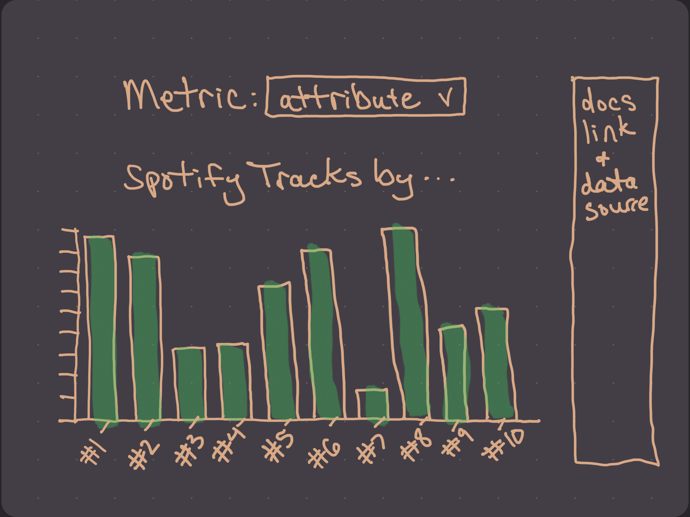
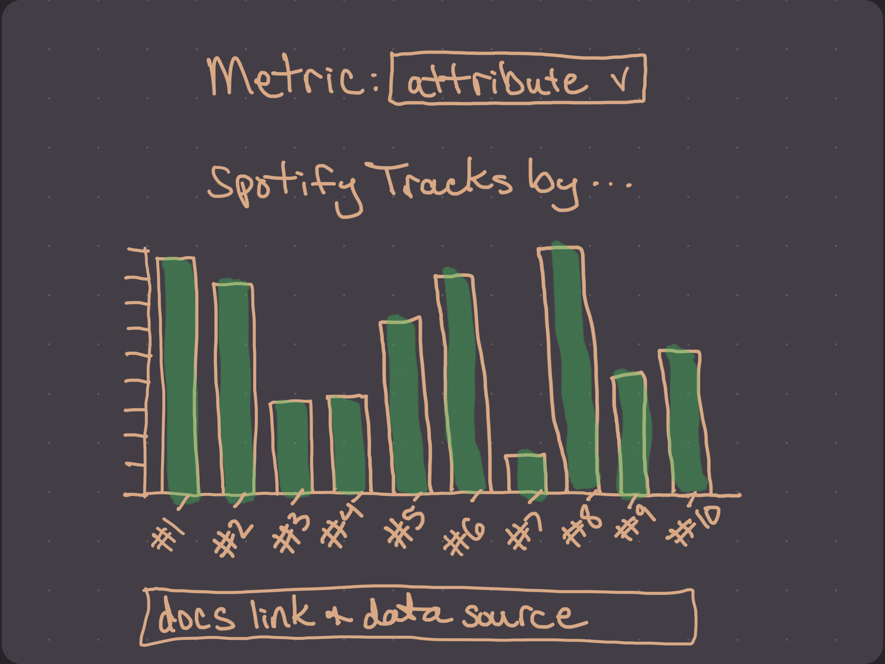
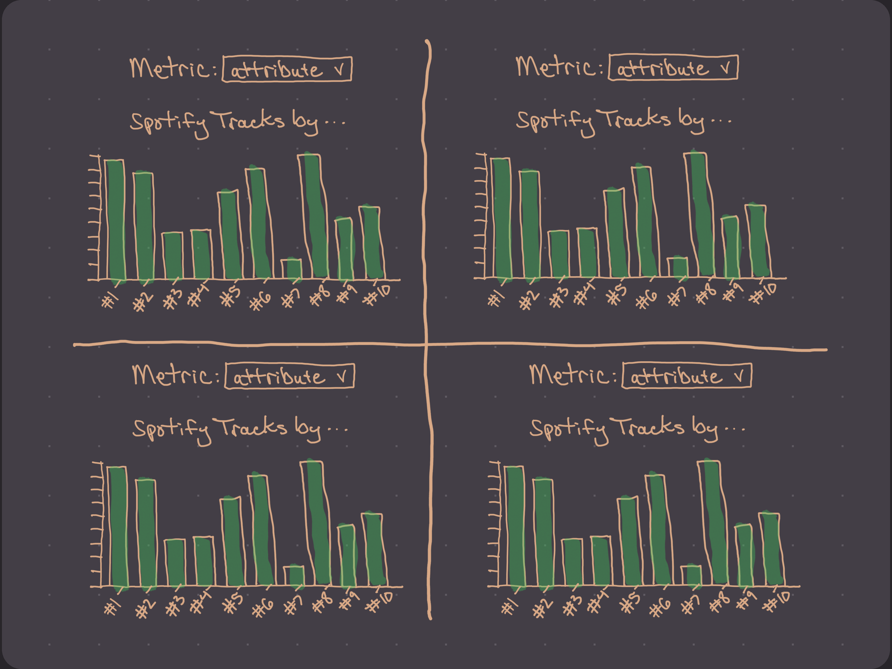
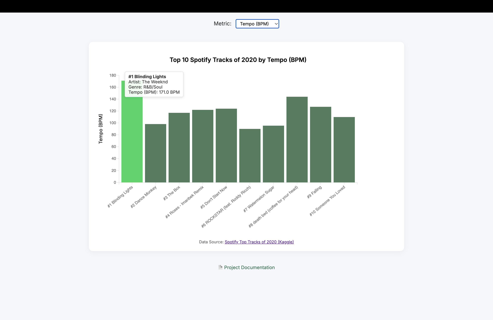
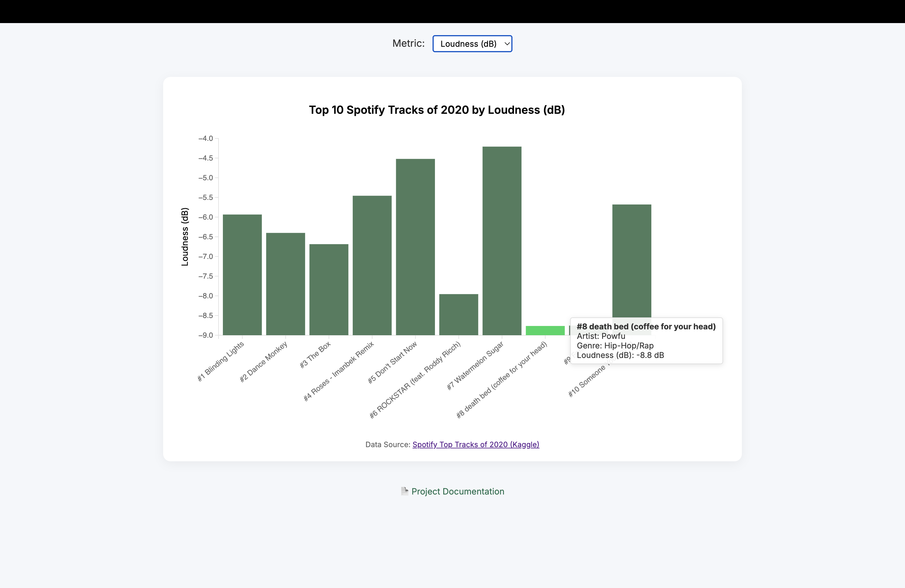
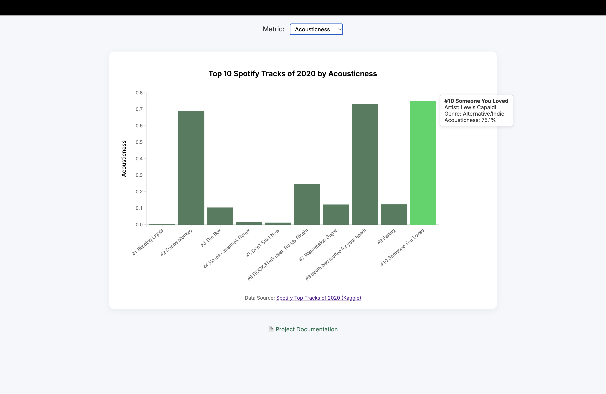
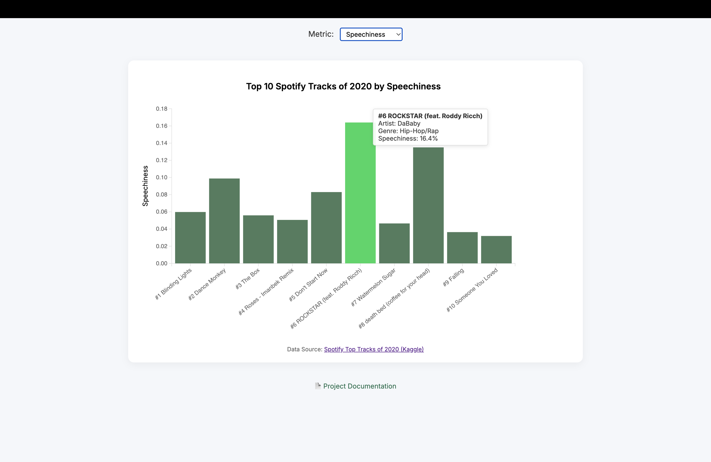
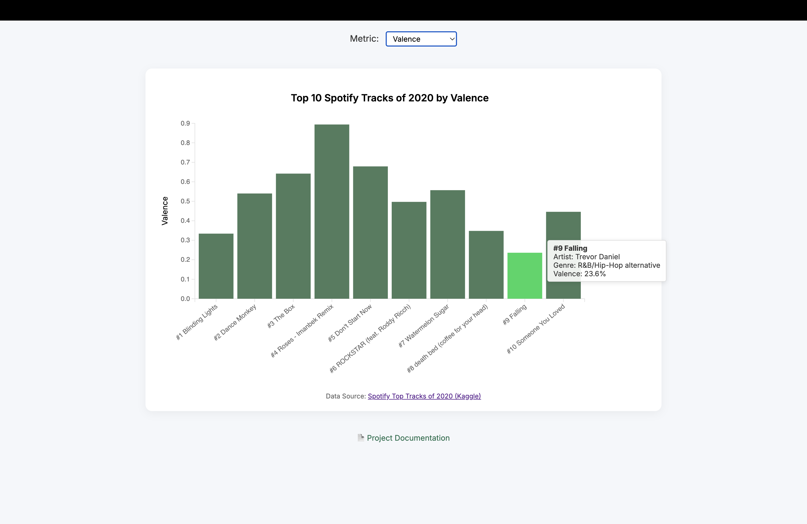

Overview: Interactive D3 chart of Spotify’s top 10 tracks by various audio features (tempo, loudness, acousticness, speechiness & valence).
Design Process
Question
How do the top 10 Spotify tracks of 2020 vary in tempo, loudness, acousticness, speechiness, and valence?
Wireframe Sketches
I explored a few layouts and these were my top three wireframes:



Iteration
After testing small multiples and panel views, I chose a single‐chart with a dropdown selector to keep the interface clean and focus attention on one metric at a time.
Implementation Details
Data Loading: Used d3.csv("data/…csv", d3.autoType) to load and auto‐parse types.
Scales & Axes: margin convention of 80/20/100/70, scaleBand for X and scaleLinear for Y; dynamic domain (d3.extent) to handle negative loudness.
Interactivity:
Dropdown menu to switch metrics.
Mouseover tooltips showing track, artist, genre and value with units.
Smooth .transition().duration(800) on metric change.
Styling:
Green palette #3A6E4C + mint hover #1AD65F.
Container card via CSS (#chart { max-width:900px; margin:auto; }).
Findings & Insights
Tempo (BPM)

#1 Blinding Lights leads with a high tempo of 171 BPM — nearly double #10 Someone You Loved.
The top 3 tracks (#1 Blinding Lights, #2 Dance Monkey and #3 The Box) all exceed 115 BPM. This suggests dance-floor music is listened to the most.
Loudness (dB)

#8 death bed (coffee for your head) and #9 Falling both clock in at –8.8 dB, the softest songs. This reflects more subdued production.
#7 Watermelon Sugar is the loudest at –4.5 dB, making it the most energetic song. It shows that being the loudest doesn’t equate to being the most popular.
Acousticness

#10 Someone You Loved ranked highest in acousticness (75.1 %), suggesting a more unplugged sound.
#1 Blinding Lights sits near 0 %, with #4 Roses – Imanbek Remix and #5 Don’t Start Now right above it—confirming their heavily produced, electronic style.
Speechiness

#6 ROCKSTAR (feat. Roddy Ricch) and #8 death bed (coffee for your head) have the highest speechiness (16.4 % & 13.5 %), indicative of their Hip-Hop/Rap genre.
#5 Don’t Start Now and #10 Someone You Loved fall below 4 %, showing more melodic vocal delivery.
Valence

#4 Roses – Imanbek Remix and #5 Don’t Start Now top out around 0.68–0.89 valence, feeling the happiest—reflecting the upbeat Dance/Electronic and Nu-Disco vibe.
#9 Falling is the lowest (0.23), indicative of its melancholic tone. It shows that even sad songs can make the top 10.
Usage & Controls
Metric selector: Choose one of Tempo (BPM), Loudness (dB), Acousticness, Speechiness, Valence. Tooltip: Hover over a bar to see track name, artist, genre and the selected metric (with units).